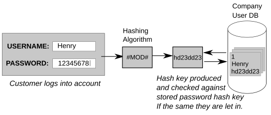
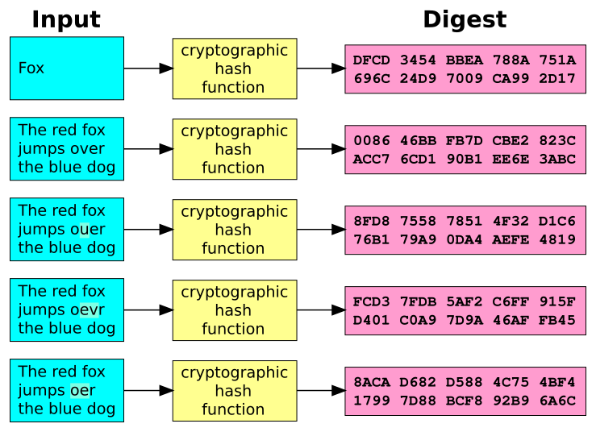
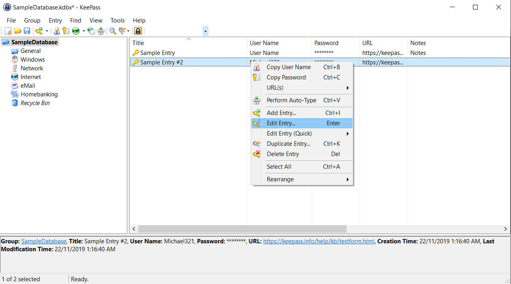
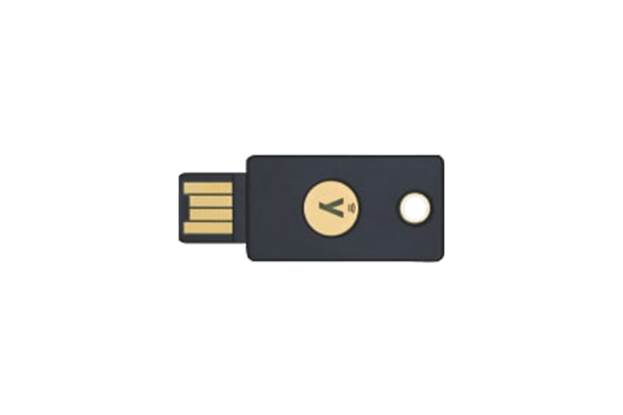

Online Safety & Privacy
In the “How to Choose a Password” video, what approach does Dr Mike Pound recommend for creating a strong, memorable password?
In the “Password Cracking” video, what hardware does Dr Mike Pound use to dramatically speed up password-cracking attempts?
In the “How NOT to Store Passwords!” video, Tom Scott explains why storing passwords in plain text is dangerous. What does he say websites should store instead?
In the “How NOT to Store Passwords!” video, what is a “salt” in the context of password storage?
In the “How Password Managers Work” video, Dr Mike Pound explains that a password manager derives a vault key from your master password. What technique does it use to make this process slow on purpose?
In the “How Password Managers Work” video, what does “zero-knowledge” mean in the context of a cloud-based password manager?

Every year, millions of accounts are compromised. How? Attackers use several techniques to guess or steal passwords. In a brute-force attack, a program tries every possible combination of characters — starting from “a”, “b”, “c” all the way to “zzzzzzzz...” and beyond. Modern GPUs can test billions of combinations per second, so short passwords fall in minutes.
A dictionary attack is smarter: instead of trying every combination, it runs through a list of common words, names, and known passwords (like “password123” or “qwerty”). Attackers also try variations — swapping “a” for “@” or “e” for “3” — because those tricks are predictable.
Then there are data breaches. When a company’s database gets hacked, all the stored passwords may leak online. If you reuse the same password on multiple sites, a single breach can unlock every account you have — a technique called credential stuffing.

Many people think a password like “P@$$w0rd!” is secure because it has symbols and numbers. It isn’t. It’s just the word “password” with predictable substitutions that cracking tools already know about. The single most important factor in password strength is length, not complexity.
Every character you add multiplies the number of possible combinations an attacker must try. A random 8-character password has about 200 billion combinations. Bump it to 16 characters and you’re looking at roughly 1028 combinations — that would take modern hardware millions of years. A great strategy is to use a passphrase — four or five random words strung together, like “correct horse battery staple.” It’s long, hard to crack, and much easier to remember than “xK#9!mQ2.”
Other rules: never reuse passwords across sites, avoid personal information (your name, birthday, pet’s name), and never use anything from a list of the most common passwords.

If every account needs a unique, long, random password, how are you supposed to remember them all? You don’t. A password manager is a program that generates, stores, and auto-fills passwords for you. You only need to remember one master password — the key that unlocks your encrypted vault.
Inside, your passwords are protected by AES encryption. When you sign in to a website, the manager recognizes the site and fills in your credentials. Cloud-based managers like Bitwarden or 1Password sync across all your devices, while offline managers like KeePass store everything locally.
The best part: most password managers use a zero-knowledge design. The company that runs the service never sees your master password or your vault contents. Everything is encrypted and decrypted on your device. Even if their servers get breached, attackers only get scrambled data they can’t read.

Even the best password can be stolen through phishing or a data breach. That’s why two-factor authentication (2FA) exists. With 2FA, logging in requires two things: something you know (your password) and something you have (a code from your phone or a physical key).
The most common 2FA methods:
And what about hashing?
A hash function takes any input — say, your password — and turns it into a fixed-length
string of characters (like 5e884898da28...). The trick: you can’t reverse the process.
There’s no way to go from the hash back to the original password. That’s why responsible websites
store only the hash of your password, not the password itself. When you log in, they hash what you type
and compare it to the stored hash. If they match, you’re in — and the original password
was never stored anywhere.
Why is the password “P@$$w0rd!” not actually secure, despite containing symbols and numbers?
What is credential stuffing?
What does “zero-knowledge” mean when describing a cloud-based password manager?
Why are hardware security keys considered the most secure form of two-factor authentication?
Why do websites store a hash of your password instead of the password itself?
Create an HTML/CSS/JS page that lets users type in a password and instantly see how strong it is:
<input type="text"> field where the user types a password.!@#$%^&* etc.)transition)Paste your HTML into the HTML panel, CSS into the CSS panel, and JS into the JavaScript panel. Click “Run” to see the result!